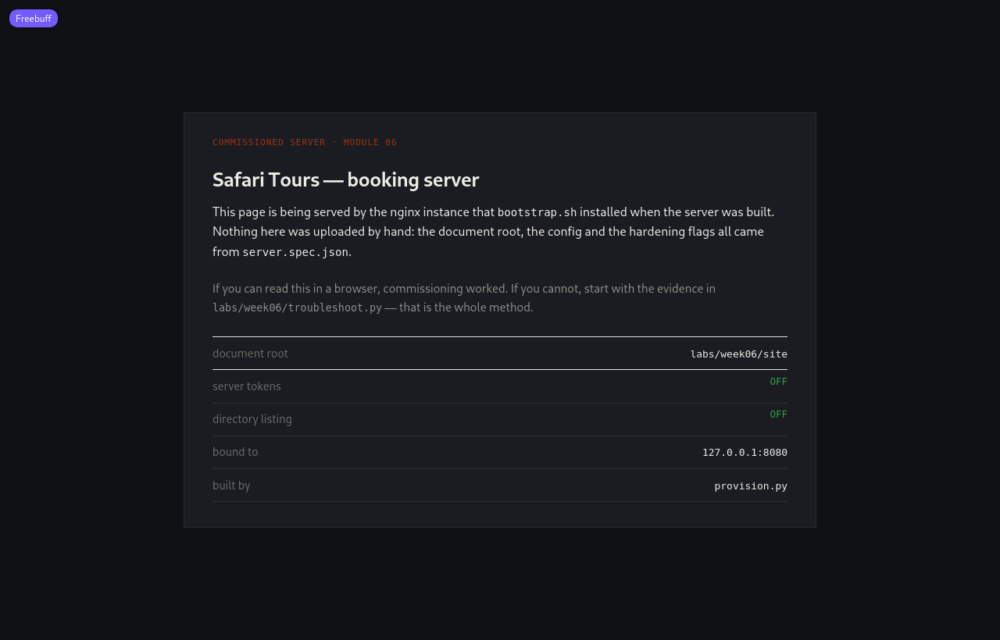

Module 06 — commissioning and troubleshooting
A secure server takes two minutes. So does an insecure one.
Every rushed launch leaves the same fingerprints: SSH open to the world, a key on disk, an unpatched image, a volume nobody encrypted. This module builds a server the repeatable way — spec, policy gate, bootstrap, verify — then breaks it five different ways to practise the part that actually gets tested at 2 a.m.
- 6 / 6
- policy checks passed — the bad spec fails four of them.
- 0.03 s
- commissioned from spec to a verified 200.
- 5
- faults injected, diagnosed and fixed, one change at a time.
Contents — 12 sections
01
Six steps, and every one of them is a security decision
Repeatability is the security property. If every server is built the same way from code, you review it once and trust every copy.
| Step | What you choose | What goes wrong when it is rushed |
|---|---|---|
| 1 | Region and image — nearest region for latency and residency; a trusted, patched image | A stale community image with a default account, or data stored in a country you did not intend |
| 2 | Size and key pair — the instance type; a key you protect | A private key in a shared drive, or in the repo, or in a chat message |
| 3 | Network and firewall — the right subnet; only the ports you need, from the addresses you know | SSH open to 0.0.0.0/0: the internet starts guessing within minutes |
| 4 | Storage and role — an encrypted volume; an IAM role instead of keys | Long-lived access keys in ~/.aws on the server itself |
| 5 | Bootstrap — user-data installs patches, software and the logging agent at first boot | Hand-configured servers that drift, and cannot be rebuilt |
| 6 | Verify and tag — test access, confirm logging, tag owner and project | The "nobody knows how it was built" problem, three months later |
The lab implements this as a pipeline: a spec file, a gate that refuses bad values, a bootstrap script that runs once, then a verification step that asks the server whether it is actually serving. The build record it writes is the "how was this built" answer that Safari Tours does not have.
02
The most useful line of code is the one that refuses to build
A policy gate turns a hardening checklist into something that cannot be forgotten at 5 p.m. on a Friday.
Configuration scanning tools — Checkov and tfsec for templates, CIS Benchmarks for hosts — exist because review is unreliable and time pressure is not. The lab version is six checks in front of the build. The good spec passes all six; the deliberately bad spec fails four:
python3 provision.py --spec server.spec.bad.jsonrefused
$ python3 provision.py --spec server.spec.bad.json commissioning safari-tours-web from server.spec.bad.json image ubuntu-22.04 · type t3.micro · region af-south-1 policy gate [FAIL] admin port not open to the internet ssh_cidr is '0.0.0.0/0' — 0.0.0.0/0 would expose SSH to every scanner on the internet [FAIL] IMDSv2 enforced imds_tokens is 'optional' — 'required' blocks SSRF credential theft [FAIL] root volume encrypted encrypted_volume must be true [PASS] only HTTP/HTTPS exposed [PASS] no access keys in bootstrap [FAIL] ownership tagged tags must include Owner and Project so the server can be found later build refused — fix the spec, not the checker
That last line is the whole culture of the thing. A gate whose output is "just override it" teaches people to override it; a gate that names the field and the reason teaches them what the field is for. And the server was never built — the failure cost nothing, which is the point of moving the check earlier than production.
03
The same build in CLI flags, and why three of them matter
The commands say what safe defaults look like — and each flag is a decision you can explain.
shell · from the deckthe secure launch
aws ec2 create-key-pair --key-name web-key \
--query KeyMaterial --output text > web-key.pem
chmod 400 web-key.pem
aws ec2 create-security-group --group-name web-sg \
--description "Web tier" --vpc-id vpc-0abc
aws ec2 authorize-security-group-ingress --group-id sg-0123 \
--protocol tcp --port 22 --cidr 197.248.10.25/32 # one address, not the world
aws ec2 authorize-security-group-ingress --group-id sg-0123 \
--protocol tcp --port 443 --cidr 0.0.0.0/0 # the service, not the shell
aws ec2 run-instances --image-id ami-0xyz --instance-type t3.micro \
--key-name web-key --security-group-ids sg-0123 \
--iam-instance-profile Name=web-role \ # a role, not a key on disk
--metadata-options HttpTokens=required \ # IMDSv2, blocks SSRF theft
--block-device-mappings '[{"DeviceName":"/dev/xvda","Ebs":{"Encrypted":true}}]' \
--user-data file://bootstrap.sh \
--tag-specifications 'ResourceType=instance,Tags=[{Key=Owner,Value=ict}]'
| Flag | What it prevents |
|---|---|
| chmod 400 on the key | SSH refuses keys other users can read — and a key in a shared folder is already lost |
| --cidr 197.248.10.25/32 for SSH | Every automated scanner on the internet guessing at port 22 |
| HttpTokens=required | SSRF in the web app reaching the metadata service — IMDSv2 needs a token obtained by PUT, which simple request forgery cannot do |
| Ebs Encrypted:true | Reading the volume, or its snapshots, from outside the instance |
The metadata flag is the one worth memorising. In 2019 the Capital One breach used exactly this path: a misconfigured web application, a server-side request to 169.254.169.254, and a role's credentials returned in the response. IMDSv2 does not make SSRF impossible; it makes the credential theft through it need a request the attacker's primitive cannot send.
04
At scale, the build has to live in a file
Six tools that turn "we always do it this way" into something a reviewer can diff.
| Tool | Job | What it does not solve |
|---|---|---|
| CloudFormation | Native AWS templates that create a whole stack in one step | Provider lock-in — the template is AWS-shaped |
| Terraform / OpenTofu | The same workflow across AWS, Azure, Google Cloud and OpenStack | State files become a secret of their own |
| Ansible | Post-launch configuration: packages, hardening, services | Drift on machines that were changed by hand afterwards |
| Golden images (Packer) | A pre-hardened base that every launch inherits | Images go stale — rebuild on a schedule |
| Checkov / tfsec | Scan templates for insecure settings before deploying | Only what the rules check; a clear scan is not a safe system |
| Version control | Every change reviewed, logged and reversible | Nothing, if people use it — that is the hard part |
The last row is doing more work than the others. A template in a repository answers "how was this server built" with a commit, and answers "when did that change" with a blame. It is also the only row that would have saved Safari Tours in section 10.
05
The checklist, split the way the failures actually divide
Access and network on the left, system and data on the right. Most breaches start on the left.
Access and network
- No SSH or RDP open to 0.0.0.0/0 — bastion, VPN or Session Manager
- Password login disabled; keys or SSO only
- IMDSv2 enforced on the metadata service
- IAM roles, never access keys on disk
- Databases in private subnets
System and data
- Patched at first boot, and on a schedule
- EBS volumes and snapshots encrypted
- Unused packages and services removed
- Logging and monitoring agents installed
- CIS baseline applied; the build recorded in the inventory
The lab automates the left column (a gate) and records the right column (a build record). That split is not arbitrary: the left is decidable from a spec, the right needs the host to exist — which is why one is a check before the build and the other is verification after it.
06
Six steps, and the discipline is in step four
Change one thing at a time, and write down what happened. Everything else is a shortcut to working blind.
| Step | Ask | In practice |
|---|---|---|
| 1 | Define the problem | What exactly fails, for whom, since when? Reproduce it, or you are guessing. |
| 2 | Gather evidence | Status code, listener, config test, error log, recent changes. |
| 3 | Form a hypothesis | Work a layer at a time: network → host → service → application. |
| 4 | Change one thing | One. Record the result, even when it is "no change". |
| 5 | Fix and verify | Verify with the same test that failed, not with a different one that passes. |
| 6 | Document | Update the runbook so the next person starts where you finished. |
The lab's five faults are all diagnosed this way, and each one records the evidence bundle before the fix: the status code, what was listening, what nginx -t said, and the last lines of the error log. That is the deliverable the lab sheet asks for — symptom, evidence, cause, fix — and it is the reason the fix is credible: it was verified against the test that failed.
07
Seven symptoms, and the one check that separates them
Most instance problems announce themselves precisely. The skill is reading the announcement.
| Symptom | Likely cause | What to check |
|---|---|---|
| SSH times out | Blocked or unroutable | Security group inbound, NACL, route to the internet gateway, public IP assignment |
| Permission denied (publickey) | Wrong key or wrong user | The right .pem, permissions 400, the right default user |
| Stops right after launch | Volume or limit | State transition reason, EBS limits, KMS permissions on an encrypted volume |
| Status check failed — instance | OS-level fault | System log, console screenshot, disk full, fstab or kernel errors |
| Status check failed — system | Underlying host | Stop and start, to move the instance to healthy hardware |
| Site down but SSH works | Service or host firewall | Is nginx running? Port 80/443 allowed? ufw or firewalld on the host? |
| AccessDenied on API calls | Missing IAM permission | Instance role policy, explicit denies, policy simulator |
"Site down but SSH works" is the row the lab spends its time on, because it is the one where the network is fine and the problem is inside. It also has the most varied causes: a stopped service, a config that will not parse, a file the worker cannot read, a proxy pointing at nothing. Four different faults, four different statuses — and one method.
08
GitLab, 31 January 2017: the fix was the incident
Five backups failed at once, on the day they were needed. The post-mortem is required reading.
While fighting a spam-driven load problem, an engineer working on the primary database ran a delete command intended for a replica. About 300 GB of production data went before it was stopped. The recovery — live-streamed, and published as a post-mortem — took most of a day from a staging snapshot, and roughly six hours of data was lost. Several backup and replication mechanisms turned out not to be working.
| Failure | Control |
|---|---|
| A tired operator hit the wrong host | Prompts that show which server you are on; separate credentials for primary and replica |
| Production access was broad | Restricted, just-in-time access with a second pair of eyes for destructive commands |
| Backups were assumed to work | Restore tests on a schedule — a backup nobody restored is a hope |
| The runbook was in someone's head | A written, rehearsed procedure for losing the primary |
The lesson for this module is uncomfortable: troubleshooting is itself a change to production, and it deserves the same care as a deployment. The lab enforces a small version of that discipline — one fault at a time, evidence before the fix, verification after — which is easy to do when the stakes are a localhost port and hard to remember when the stakes are a database.
09
Lab: commission it from a spec, then break it five ways
A real nginx, a real policy gate, real faults — and the fixes verified against the test that failed.
labs/week06 · server.spec.json, bootstrap.sh, provision.py, troubleshoot.py · logs: provision.log, troubleshoot.log
The lab sheet asks for an AWS Learner Lab instance. That account does not exist, so the cloud half is not run: no security group created through the API, no instance launched, no console screenshots. What is run is everything that does not need an account, against a real server on this machine. Substituted: a directory is the instance, the listen address is the security group, and the "encrypted volume" is a flag the gate enforces rather than something cryptsetup did.
1 · commission from a spec
python3 labs/week06/provision.py6/6 checks
$ python3 provision.py commissioning safari-tours-web from server.spec.json image ubuntu-22.04-hardened · type t3.micro · region af-south-1 policy gate [PASS] admin port not open to the internet [PASS] IMDSv2 enforced [PASS] root volume encrypted [PASS] only HTTP/HTTPS exposed [PASS] no access keys in bootstrap [PASS] ownership tagged bootstrap [bootstrap] 1/4 preparing document root at …/labs/week06/site [bootstrap] 2/4 checking the page exists [bootstrap] 3/4 writing the build stamp [bootstrap] 4/4 nothing to install — nginx is already present on this host [bootstrap] done render and start nginx -t: ok listening on 127.0.0.1:8080 after 0.01s GET / → 200 in 0.5 ms commissioned in 0.03s — 6 policy checks passed

2 · break it five ways
Each fault is induced for real, then diagnosed by collecting the same four pieces of evidence — status code, listener, config test, error log — before anything is changed. The fix is then verified with the request that failed.
| Fault | What the user sees | Evidence | Cause and fix | After |
|---|---|---|---|---|
| Blocked | Connection refused, though the process runs | 0 | Listener bound to 127.0.0.9 — nothing answers on 127.0.0.1. Restore the listen address. | 200 |
| Service down | Site unreachable | 0 | No process, so no listener, so the TCP connection is refused before HTTP exists. Start the service. | 200 |
| Config error | Service will not start after a change | emerg | unknown directive "worker_processes_on_holiday" … nginx.conf:31 — nginx validates the whole file first. Restore the generated config, re-test. | 200 |
| Permissions | 403 for a page that exists | 403 | Document was mode 000, so the worker could not read it. Restore 0644. | 200 |
| Dead upstream | One route returns 502, the rest is fine | 502 | connect() failed (111: Connection refused) … upstream: "http://127.0.0.1:9099/" — start the service the proxy points at. | 200 |
tail of labs/week06/troubleshoot.log5/5 fixed
fault 4 · permissions
symptom 403 Forbidden for a page that exists
evidence status 403 · 127.0.0.1:8080
cause the document was mode 000 — the worker could not read it, so
nginx returned 403 rather than 404
fix restore readable permissions (0644), and check ownership the same way
verified 200 ok
fault 5 · dead upstream
symptom one route returns 502 while the rest of the site is fine
evidence status 502 · 127.0.0.1:8080
cause proxy_pass pointed at 127.0.0.1:9099 where nothing was listening
fix start the upstream service and re-test the same route
verified 200 ok
5 faults reproduced, diagnosed and fixed · problems: none
10
Safari Tours: one instance, no documentation, and a manager with a plan
Every finding here is a step from section 01 that was skipped.
| Finding | Step skipped | Risk |
|---|---|---|
| SSH and RDP open to 0.0.0.0/0 | Network and firewall | Automated exploitation, with no human needed |
| AdministratorAccess key in /home/ec2-user/.aws | Storage and role | Any read of that file is a full account compromise |
| Unencrypted volume | Storage | Snapshots, and anyone with the disk, get the data |
| System status check failing | Verify | The host, not the code — stop and start moves it |
| No documentation; contractor gone | Verify and tag | Nobody can rebuild it, which is why it is still like this |
Ranked by what can be done today, the key outranks the open ports: an admin key on disk is a complete takeover the moment anything can read the filesystem, and open RDP is a machine doing the guessing. Both are bad; one is finished and the other is a race.
The manager's request — open all ports so it works — is the moment the module is really about. The answer is not "no": it is "here is what the port change would expose, here is the port the service actually needs, and here is the rebuild that makes this the last time we have this conversation". A server rebuilt from a template in version control is also the answer to "nobody knows how it was built".
11
Five questions on Safari Tours
Scenario in section 10. Answer, then compare — each one has an explanation.
12
What I am taking from module 06
- 01Speed is neutral: the same two minutes build a secure server or an incident. Repeatability is the control.
- 02Move the check earlier — a policy gate that refuses a bad spec costs nothing; the same finding in production costs a weekend.
- 03Four defaults carry most of the weight: no open admin ports, IMDSv2, roles not keys, encryption.
- 04Diagnose a layer at a time, change one thing, and verify with the test that failed.
- 05Documentation is a security control: a server nobody can rebuild is a server nobody can fix safely.
next — module 07
Cloud issues, challenges and provider lock-in
Shared responsibility, lock-in and the core principles that survive whichever provider wins. Back to the module index →
Reading
- Reese (2009), Cloud Application Architectures, Ch. 4–5
- AWS documentation, Troubleshoot EC2 instances
- CIS Amazon Linux Benchmark (overview)